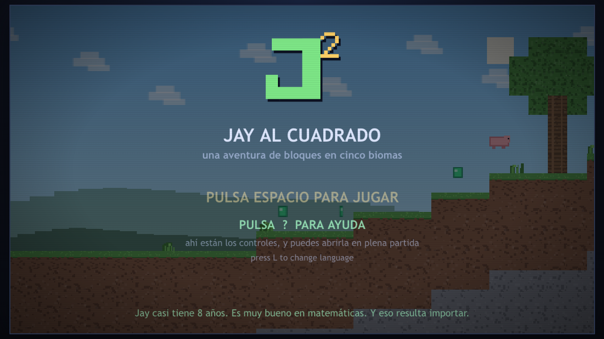
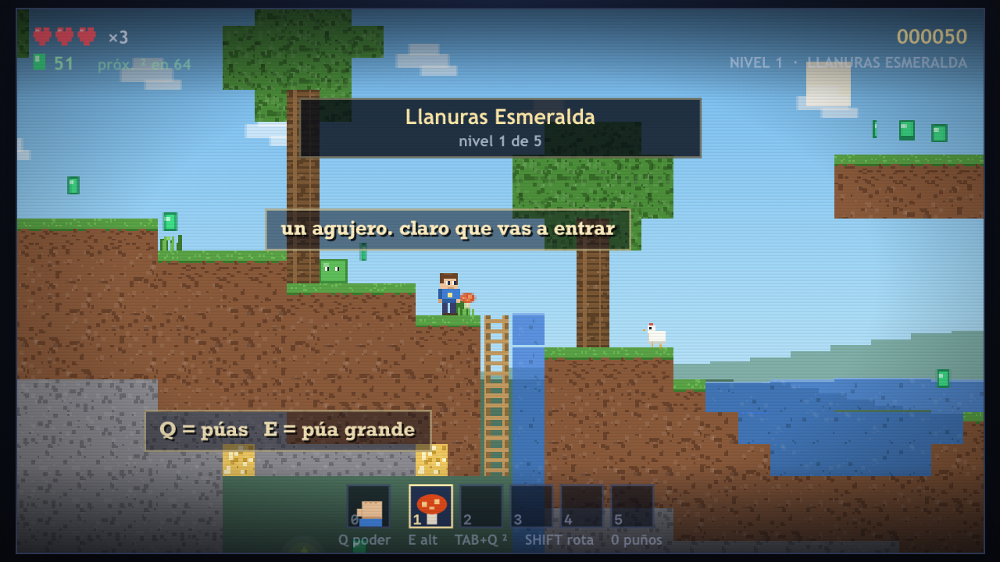

Un plataformas 2D al estilo de los viejos juegos de Mario, construido con
bloques al estilo Minecraft, donde ser bueno en matemáticas es el verdadero superpoder.

Jay casi tiene 8 años. Es muy bueno en matemáticas. Y eso resulta importar.
Todo el juego es un único archivo HTML sin dependencias — funciona por completo en tu navegador, sin conexión, sin instalación y sin compilación. Los cuadrados perfectos dan gemas y recompensas, las runas moradas plantean sumas según el nivel en el que estés, y cinco biomas te llevan desde las Llanuras Esmeralda hasta el Castillo de Cobalto.

| Tecla | Función |
|---|---|
| ← → | caminar (A / D también sirven) |
| ↑ | saltar • subir escalera, enredadera o tronco |
| ↓ | agacharse • bajar |
| SPACE | saltar — pulsa otra vez en el aire para subir más alto, hasta cinco veces |
| ↓ + SPACE | caer a través de tablones de madera |
| Q | usar poder • con las manos desnudas, mantén para romper bloques |
| E | segundo poder • gancho |
| TAB + Q | al cuadrado — el poder Q, dos veces |
| 0 | manos desnudas |
| 1–5 | elige una ranura del inventario (el teclado numérico también funciona) |
| SHIFT | rota lo que llevas |
| P o ESC | pausar |
| ? o H | ayuda, en cualquier momento |